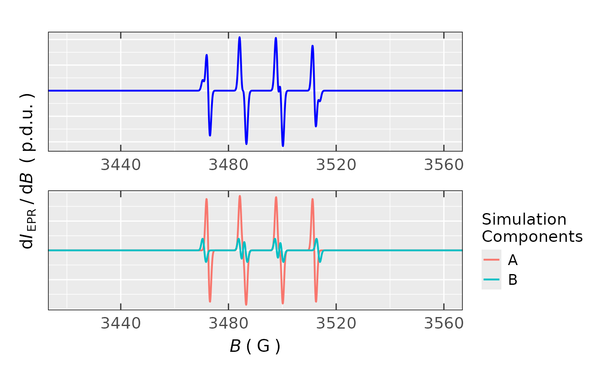

Simulation of Isotropic EPR Spectra Consisting of Several Components
Source:R/eval_sim_EPR_iso_combo.R
eval_sim_EPR_iso_combo.RdThis is an extension of the "basic" EPR simulation provided by the eval_sim_EPR_iso function,
where one can combine several simulated EPR spectra (components), even with (partial) overlay,
into one spectrum corresponding to sum of all those components. Such processing might be useful for the simulation
of EPR spectra with satellites, especially of those consisted of naturally occurring
isotopes, like the one presented in Examples.
Usage
eval_sim_EPR_iso_combo(
g.iso.vec,
instrum.params = c(Bcf = 3500, Bsw = 200, Npoints = 2048, mwGHz = 9.8),
B.unit = "G",
path_to_dsc_par = NULL,
origin = NULL,
nuclear.system,
natur.abund.vec,
lineSpecs.form = "derivative",
lineGL.DeltaB,
lineG.content.vec,
Intensity.sim = "dIeprSim_over_dB",
Intensity.sim.coeffs.vec,
plot.sim.interact = NULL
)Arguments
- g.iso.vec
Numeric vector with all \(g_{\text{iso}}\) values fro each component.
- instrum.params
Named numeric vector, containing instrumental parameters required for the simulation =>
Bcf"central field" (magnetic flux density, \(B_{\text{CF}}\)) Bsw"sweep width" (magnetic flux density recording region, \(B_{\text{SW}}\)) Npointsnumber of spectral points (corresponding to resolution) within the "sweep width" mwGHzapplied microwave frequency in GHzto record the continuous wave (CW) EPR spectrumDefault values are chosen to cover the EPR spectra of common organic radicals. If
instrum.params = NULLthen parameters must be provided by thepath_to_dsc_paras well as byoriginarguments.- B.unit
Character string, pointing to unit of magnetic flux density which is to be presented on \(B\)-axis of the EPR spectrum, like
"G"(Gauss),"mT"(millitesla) or"T"(tesla), default:B.unit = "G". THE UNIT MUST BE SHARED ACROSS ALL RELEVANT B-ARGUMENTS likecfandswwithin theinstrum.paramsAS WELL AS within THOSE INlineGL.DeltaB!- path_to_dsc_par
Character string, path (can be also acquired by the
file.path) to.DSC/.dscor.par(depending on the OS, seeoriginargument)textfiles including all instrumental parameters from the EPR machine. Default:path_to_dsc_par = NULLin case if theinstrum.paramsis already defined. IF theinstrum.params = NULLthen BOTH thepath_to_dsc_parAS WELL AS theoriginMUST BE DEFINED !- origin
Character string, corresponding to software which was used to obtain the EPR spectra on spectrometers, because the files are slightly different, whether they were recorded by the "WinEpr" (
origin = "winepr") or by the "Xenon". Default:origin = NULLin case no file is used to extract the parameters (i.e. exactly ifpath_to_dsc_par = NULL).- nuclear.system
Nested list with the elements corresponding to considered interacting nuclei for each EPR spectral component. For example, the
list(list("1H",2,24),NULL,list(list("14N",1,45),list("1H",4,15)))refers to the following components: 1. \(2\times A(\text{1H}) = 24\,\text{MHz}\), 2. single line spectrum without HF structure, 3. \(1\times A(\text{14N}) = 45\,\text{MHz} + 4\times A(\text{1H}) = 15\,\text{MHz}\).- natur.abund.vec
Logical vector, whether to consider natural abundance of the interacting nuclei within the components (see also
Examples) likec(TRUE,FALSE,TRUE).- lineSpecs.form
Character string, describing either
"derivative"(default) or"integrated"(i.e."absorption"which can be used as well) line form of the analyzed EPR spectrum/data.- lineGL.DeltaB
Nested list of the Gaussian and Lorentzian linewidths for all individual components like
list(list(1,NULL),list(3,NULL),list(1,NULL)).- lineG.content.vec
Numeric vector, corresponding to Gaussian line content for all individual components of the EPR spectrum like
1,1,1(all spectral components are described by the pure Gaussian line).- Intensity.sim
Character string, pointing to column of simulated EPR intensity within the related output data frame. Default:
Intensity.sim = "dIeprSim_over_dB".- Intensity.sim.coeffs.vec
Numeric vector of multiplication coefficients related to EPR component intensities like
c(2,10,0.2).- plot.sim.interact
Character string, indicating the interactive plot outputs, to visualize either individual
"components"or"sum"of all components. As default, the interactive plot is switched off (plot.sim.interact = NULL).
Value
List of the following data frames and plots in case of
plot.sim.interact = NULL =>
- df
Long-format data frame with the simulated EPR spectral components A, B, C, ... (e.g. representing the individual radicals) as a categorical variable + magnetic flux density, intensity as well as their sigmoid integral column/variable.
- df.areas
Data frame with simulation components A, B, C ...and their corresponding double/single integrals (or
areas) and their relative ratios to overall integral sum (weighted_areas).- df.sum
Data frame with the overall intensity (+ magnetic flux density) as well as integral sum from all simulation components.
- plot.comps
Overlay plot object with all simulated components with their corresponding intensities defined by
Intensity.sim.coeffs.vec.- plot.sum
Plot object displaying the sum of all simulation components.
If plot.sim.interact is activated (i.e. possesses either "components"
or "sum" values) interactive plots (based on plotly) are presented either with
all individual components or with the overall simulated EPR spectrum sum, respectively.
See also
Other Simulations and Optimization:
eval_ABIC_forFit(),
eval_sim_EPR_iso(),
eval_sim_EPR_isoFit(),
eval_sim_EPR_isoFit_space(),
optim_for_EPR_fitness(),
plot_eval_EPRtheo_mltiplet(),
plot_eval_RA_forFit(),
quantify_EPR_Sim_series(),
smooth_EPR_Spec_by_npreg()
Examples
## Simulation of EPR spectrum of TEMPO (aminoxyl)
## radical with 13C satellites and hyperfine coupling
## constants A(1 x 14N) = 48 MHz, A(1 x 13C) = 18.2 MHz,
## the latter 13C may appear on 4 different
## positions (methyl carbons) => therefore the overall
## probability to find it at any position is
## approx. 4,4% (1.1% per one 13C), the additional
## two quaternary α-Carbons are not considered
## see e.g. https://doi.org/10.1016/j.mencom.2014.09.018
sim.tempo.13c <-
eval_sim_EPR_iso_combo(
g.iso.vec = c(2.0059,2.0059),
nuclear.system = list(list("14N",1,48),
list(list("14N",1,48),
list("13C",1,18.2)
)
),
natur.abund.vec = c(FALSE,FALSE),
lineGL.DeltaB = list(list(1.3,NULL),
list(1.3,NULL)
),
lineG.content.vec = c(1,1),
Intensity.sim.coeffs.vec = c(0.956/3,0.044/6)
)
#
## simulated spectrum/plot:
sim.tempo.13c$plot.sum +
ggplot2::coord_cartesian(xlim = c(3425,3550))
#
## ...and the corresponding data frame:
options(pillar.sigfig = 5) ## prevent rounding
#
tempo.df.sum <- sim.tempo.13c$df.sum
tempo.df.sum[1000:1005, ]
#> # A tibble: 6 × 4
#> Bsim_mT Bsim_G Sim_sigmoid_Integ dIeprSim_over_dB_Sum
#> <dbl> <dbl> <dbl> <dbl>
#> 1 349.76 3497.6 2.0450 -4.3104e- 9
#> 2 349.77 3497.7 2.0450 -1.8064e- 9
#> 3 349.78 3497.8 2.0450 -7.3952e-10
#> 4 349.79 3497.9 2.0450 -2.9859e-10
#> 5 349.80 3498.0 2.0450 -1.1670e-10
#> 6 349.81 3498.1 2.0450 -4.4561e-11
#
## data frame with all components:
sim.tempo.13c$df[1000:1005,]
#> # A tibble: 6 × 6
#> # Groups: Sim_Components [1]
#> Sim_Components Bsim_G Bsim_mT Bsim_T dIeprSim_over_dB Sim_sigmoid_Integs
#> <fct> <dbl> <dbl> <dbl> <dbl> <dbl>
#> 1 A 3497.6 349.76 0.34976 -3.7180e-25 1.9550
#> 2 A 3497.7 349.77 0.34977 -7.2914e-26 1.9550
#> 3 A 3497.8 349.78 0.34978 -1.3975e-26 1.9550
#> 4 A 3497.9 349.79 0.34979 -2.6633e-27 1.9550
#> 5 A 3498.0 349.80 0.34980 -4.8771e-28 1.9550
#> 6 A 3498.1 349.81 0.34981 -8.7289e-29 1.9550
#
## areas/integrals
sim.tempo.13c$df.areas
#> # A tibble: 2 × 3
#> Sim_Components Sim_areas weighted_Sim_areas
#> <fct> <dbl> <dbl>
#> 1 A 2.9327 0.95600
#> 2 B 0.13497 0.043999
#
## Simulation of BMPO spin trap *OH radical
## adduct consisting of two diasteromers (A,B),
## see at https://doi.org/10.1016/S0891-5849(01)00619-0
sim.hobmpo.spec <-
eval_sim_EPR_iso_combo(
g.iso.vec = c(2.005,2.005),
nuclear.system = list(
list(
list("14N",1,38.06),# 13.6 G )
list("1H",1,34.52), # 12.3 G > DIASTEROMER A, 81.6 %
list("1H",1,1.85) # 0.70 G )
),
list(
list("14N",1,37.8),# 13.5 G )
list("1H",1,42.96),# 15.3 G > DIASTEROMER B, 18.4 %
list("1H",1,1.74) # 0.60 G )
)
),
natur.abund.vec = c(TRUE,TRUE),
lineGL.DeltaB = list(
list(1.05,NULL),
list(1.05,NULL)
),
lineG.content.vec = c(1,1),
Intensity.sim.coeffs.vec = c(0.816,0.184) # 81.6 % + 18.4 %
)
#
## preview of both components and the overall EPR simulation,
## using the `{patchwork}` R package,
## see also at https://patchwork.data-imaginist.com/
library(patchwork)
(sim.hobmpo.spec$plot.sum +
ggplot2::coord_cartesian(xlim = c(3420,3560))
) + (sim.hobmpo.spec$plot.comps +
ggplot2::coord_cartesian(xlim = c(3420,3560))
) + patchwork::plot_layout(ncol = 1,axis_titles = "collect")

#
## ...and the corresponding areas/integrals
sim.hobmpo.spec$df.areas
#> # A tibble: 2 × 3
#> Sim_Components Sim_areas weighted_Sim_areas
#> <fct> <dbl> <dbl>
#> 1 A 0.81283 0.81600
#> 2 B 0.18328 0.18400